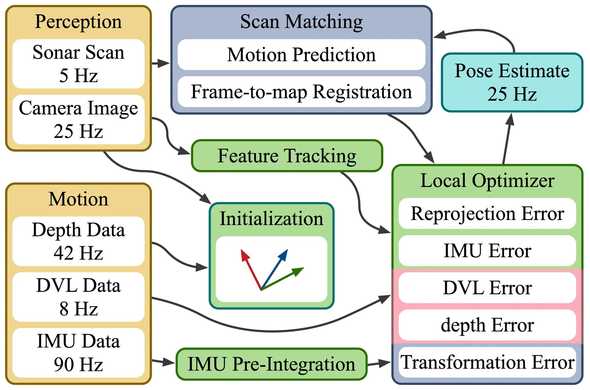
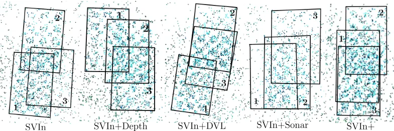
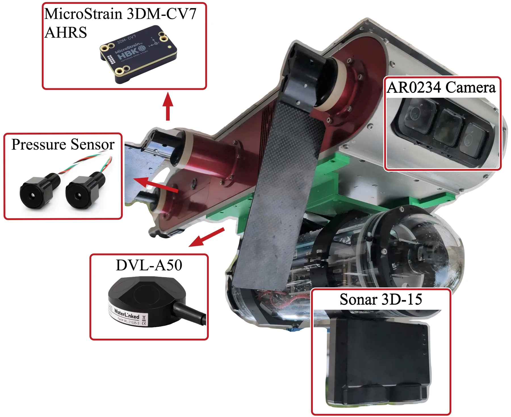
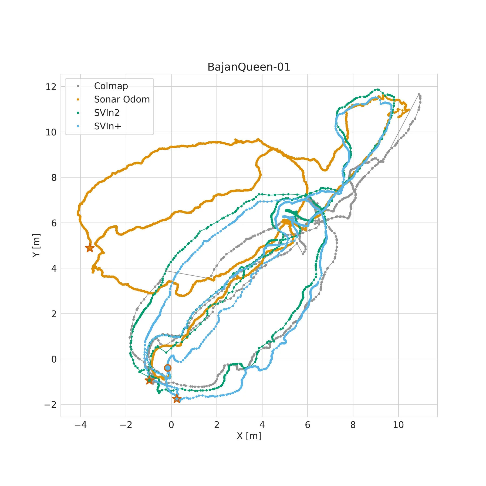
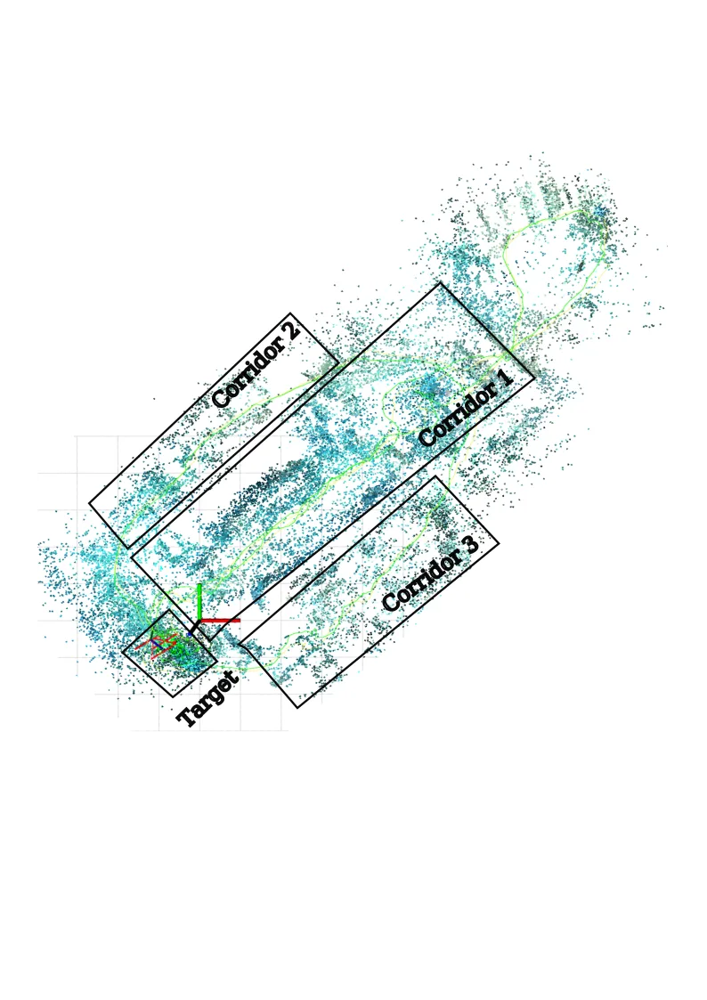
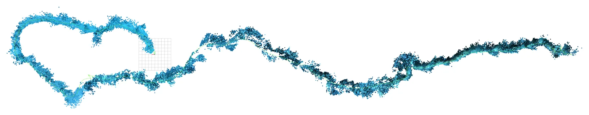

SVIn+：把 3D 声呐、视觉惯性、水压与 DVL 融进一个因子图的水下状态估计
SVIn+: Multi-Modal Framework for Robust Underwater State Estimation using 3D Sonar, Visual-Inertial, Water-Pressure, and DVL
在 SVIn 的滑动窗口优化上紧耦合水压（深度）与 DVL（速度），3D 声呐点云交给解耦的 KISS-ICP 前端、以 6D 相对位姿因子进图。现场 ArUco 标记重投影漂移：SVIn2 0.53 m → 只加深度 0.29 m（−45.3%）→ 只加 DVL 0.52 m → 加声呐 0.29 m → 全量 0.21 m（−60.4%），开环 0.21 m 甚至优于带回环的 SVIn2 0.22 m。注意正文另给了一组 0.52/0.81 m 的数，与表格口径不同，引用要说明。
marker reprojection drift
drift reduction
depth-only ablation
open-loop vs loop-closed
作者、单位与技术谱系 · Research context
作者与单位
研究脉络
- SVIn2（Rahman, Quattrini Li, Rekleitis, IJRR 2022）方法基座关系：SVIn+ 直接在 SVIn2 的紧耦合视觉惯性框架上扩展，Table I 的第一行就是 SVIn2 基线，消融的所有增量都相对它计算。[论文 §I、§V-E 与参考文献 [28]]
- SVIn（机械扫描声呐的紧耦合混合框架）方法上游关系：SVIn 已经把声呐引入紧耦合框架，但受限于机械声呐的低分辨率与低更新率；SVIn+ 换成 3D 声呐并改成“解耦前端 + 相对位姿因子”。[论文 §II]
- 同团队 ICRA 2026 的紧凑 3D 声呐稠密建图工作（Burgul et al.）团队前作关系：本文的声呐-相机外参标定流程沿用该前作（四块煤渣砖靶标 + PnP），3D 声呐的可用性论证也建立在这条前作线上。[论文 §V-A 与参考文献 [9]]
合作网络
- 特拉华 × 达特茅斯University of Delaware（Rekleitis 组） → Dartmouth College（Quattrini Li 组）关系：共同署名（跨校合作，SVIn 系列的延续）[论文首页署名与参考文献 [28]]
- SINTEF OceanSINTEF Ocean（Xanthidis） → University of Delaware / Dartmouth关系：共同署名（产业研究院参与）[论文首页署名与致谢]
- 开源发布作者团队 → SVIn+ 代码与数据集关系：官方项目页（代码 + 数据）[项目页]
作者与单位逐条来自首页脚注（三个单位块）。脉络三条分别是框架基座（SVIn2）、同系列方法（SVIn）与团队前作（ICRA 2026 声呐建图）。合作边只记录共同署名，未推断师生关系；开源状态以摘要声明为准。
方法本质拆解 · What actually changed
是不是微调？
没有学习成分，不需要训练：这是一个纯几何/概率的因子图优化系统，所有模块（预积分、声呐配准、优化）都是确定性的，因此复现不依赖数据集规模与算力。
有没有额外约束？
约束来自观测模型本身：水压给深度方向的一维观测，DVL 给机体系三轴速度，声呐前端给 6D 相对位姿因子；此外靠外参标定（Kalibr + PnP）把各传感器统一到 IMU 系，外参误差会直接变成系统偏差。
推理/后端到底做了什么？
后端是滑动窗口非线性优化：IMU 预积分因子 + 视觉重投影 + 深度/速度观测 + 声呐相对位姿因子联合求解，前端 KISS-ICP 独立跑（解耦），只把结果作为因子送入；因此计算量与声呐点数解耦，才能在 GTX 1050 上实时。
方法本质是什么？
本质是把“不同可靠性、不同信息量的传感器”放进同一个估计器，但用不同的接入层级：高可靠高频的（IMU/视觉）进状态，低可靠低频的（声呐）进因子。效果是在无回环条件下把漂移压到接近回环系统的水平，代价是依赖外参精度与前端配准成功率。
输入 IMU、双目、水压、DVL 与 3D 声呐点云；改动的是“声呐以相对位姿因子接入、水压/DVL 以紧耦合观测接入”的融合结构；直接效果是标记重投影漂移 0.21 m（基线 0.53 m），且开环优于带回环基线。

桥接价值Bridge
桥接价值
我们的核心问题是“传感器降级时估计器还能不能信”，这篇给了一个可直接照搬的结构：视觉惯性滑动窗口负责局部精度，水压与 DVL 作为紧耦合观测约束垂直与速度漂移，稀疏的 3D 声呐不做特征级融合，而是由解耦前端输出相对位姿因子进图——用“因子”而不是“观测”接入低质量高分量的传感器，既保住稀疏性又利用了结构。更值得记的是它的结论：多模态开环（0.21 m）已经优于带回环的基线（0.22 m），说明在退化环境里“把传感器用对”可能比“加回环”更划算。
方法与模块Method
方法摘要
在 SVIn（基于 OKVIS 的紧耦合视觉惯性混合框架）上扩展：把水压传感器的水深观测与 DVL 的三轴速度观测写进同一个滑动窗口非线性优化，IMU 用流形预积分。3D 声呐（5 Hz、点云稀疏、多径噪声重）不直接进优化，而是交给 KISS-ICP 做帧间配准，输出 6D 相对位姿作为因子加入因子图；外参用 Kalibr（相机-IMU）与 PnP（声呐-相机，四块煤渣砖靶标）标定。系统在 Aqua2 平台上跑，作者报告也能在 GTX 1050 笔记本上实时运行。
可迁移模块
四个模块可以直接搬：一是“低质量高信息量传感器 → 解耦前端 → 相对位姿因子”的接入方式，等价于把声呐/LiDAR 的配准结果当作 between 因子，避免污染主状态；二是水深观测作为单目深度方向的一维约束，思路可平移到气压计/GNSS 高程融合；三是无真值场景下的“回到原点/标记重投影”漂移指标，适合我们做野外数据评估；四是分模态增量消融的表结构（逐传感器加一项），可以直接改成我们的消融模板。

证据Evidence
关键证据与数字
Table I（BajanQueen-01，ArUco 标记重投影距离，越小越好）：SVIn2 0.53±0.11 m；SVIn2 带回环 0.22±0.11 m；SVIn+Depth 0.29±0.11 m（−45.3%）；SVIn+DVL 0.52±0.23 m；SVIn+Sonar 0.29±0.15 m；全量 SVIn+ 0.21±0.08 m（−60.4%）。正文 §V-C 另报“SVIn+ 0.52 m vs SVIn2 0.81 m 的回到原点误差”，与表格口径不同（应是两种度量：回到原点位移 vs 标记重投影），引用时必须标明取哪一个。数据规模：三条序列——沉船内部约 75 m / 88 min、整艘沉船约 600 m / 55 min、珊瑚礁约 280 m / 1252 s。
边界与下一步Limits & Next Step
边界与风险
作者承认的限制：当前只在局部窗口做连续里程计，没有全局回环与重定位；声呐配准在点云极稀疏时会失败（Fig. 12 给了三类失败例），计划做自适应模态切换；DVL 失准等动态外参问题需要在线标定。我们要额外注意：一是正文与表格的漂移数字不一致，两个数不能混用；二是评估依赖 ArUco 检测，标记检测本身有误差且只在 3 次重访上采样；三是单平台（Aqua2）、单海域（巴巴多斯）、三条序列，泛化性有限；四是没有报告估计器一致性（NEES/协方差校准），而这对“可靠性”主张很关键。
下一步实验
第一，把“解耦前端 → 相对位姿因子”的接法搬到我们的 LiDAR/视觉融合管线：固定后端，只替换声呐/LiDAR 的接入方式（原始观测 vs 相对位姿因子），比较 ATE 与优化耗时。第二，复现它的分模态增量消融，在含 GNSS 失锁的序列上分别加高程、速度、相对位姿约束，看哪一项真正压住漂移。第三，补上它缺的一致性检验：在同一段数据上统计残差与协方差的 NEES，判断“误差变小”是估计变准还是协方差被低估。







